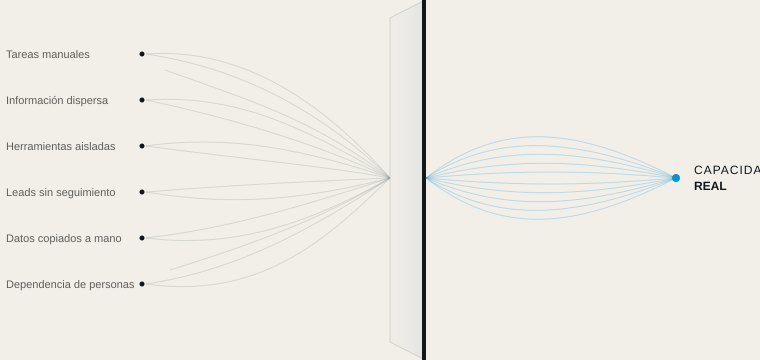

Automatización
Convertimos las tareas repetitivas en procesos automáticos, con las reglas que definimos contigo.
AUTOMATIZACIÓN DE RECURSOS
La mayoría de las empresas no necesitan más herramientas. Necesitan saber dónde se les escapa el tiempo, la información y la atención.
SKURX SYSTEMS identifica dónde se pierde capacidad y la convierte en sistemas de trabajo más claros, conectados y eficientes.
QUÉ HACEMOS
Detectamos dónde pierde capacidad tu empresa y la liberamos con automatización, herramientas conectadas e inteligencia artificial aplicada donde tiene sentido.

NUESTROS SERVICIOS
Convertimos las tareas repetitivas en procesos automáticos, con las reglas que definimos contigo.
Para lo que una regla no resuelve: la IA potencia a tu equipo, no lo sustituye.
Conectamos tus herramientas para que la información pase de una a otra sin que nadie intervenga.
CÓMO LO HACEMOS
No partimos de una tecnología, sino de una pregunta: ¿dónde está perdiendo capacidad tu empresa y por qué?
Conocemos tu empresa desde dentro, observando cómo trabaja tu equipo cada día.
Localizamos dónde se pierde tiempo, información o clientes potenciales, y por qué.
Te decimos qué cambiaríamos y qué no merece la pena tocar.
Lo ponemos en marcha, lo probamos contigo y lo ajustamos hasta que funcione como tu equipo necesita.
EL PRIMER PASO
En una semana analizamos cómo trabaja tu empresa y te entregamos un mapa claro: qué consume capacidad, qué se puede automatizar y en qué orden. El informe es tuyo, decidas lo que decidas.
Cada flujo explicado en lenguaje claro.
Cuentas, herramientas y datos son tuyos.
Puedes ver qué ha hecho cada automatización y cuándo.
Si dejamos de trabajar juntos, todo sigue siendo tuyo.
APLICADO A TRES SECTORES
Escenarios ilustrativos basados en situaciones habituales. Trabajamos con empresas de cualquier sector, en toda España.
Todo sigue en marcha, aunque ya no quede nadie en la oficina.